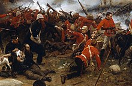

Various liberalising political reforms took place in the UK, including expanding the electoral franchise. The Great Famine caused mass death in Ireland early in the period. The British Empire had relatively peaceful relations with the other great powers. It participated in various military conflicts mainly against minor powers. The British Empire expanded during this period and was the predominant power in the world.
Victorian society valued a high standard of personal conduct across all sections of society. The emphasis on morality gave impetus to social reform but also placed restrictions on certain groups' liberty. Prosperity rose during the period, but debilitating undernutrition persisted. Literacy and childhood education became near universal in Great Britain for the first time. Whilst some attempts were made to improve living conditions, slum housing and disease remained a severe problem.
The period saw significant scientific and technological development. Britain was advanced in industry and engineering in particular, but somewhat undeveloped in art and education. Great Britain's population increased rapidly, while Ireland's fell sharply.
Terminology and periodisation
In the strictest sense, the Victorian era covers the duration of Victoria's reign as Queen of the United Kingdom of Great Britain and Ireland, from her accession on 20 June 1837—after the death of her uncle, William IV—until her death on 22 January 1901, after which she was succeeded by her eldest son, Edward VII. Her reign lasted 63 years and seven months, a longer period than any of her predecessors. The term 'Victorian' was in contemporaneous usage to describe the era.[1] The era has also been understood in a more extensive sense as a period that possessed sensibilities and characteristics distinct from the periods adjacent to it, in which case it is sometimes dated to begin before Victoria's accession—typically from the passage of or agitation for (during the 1830s) the Reform Act 1832, which introduced a wide-ranging change to the electoral system of England and Wales.[note 1] Definitions that purport a distinct sensibility or politics to the era have also created scepticism about the worth of the label 'Victorian', though there have also been defences of it.
Michael Sadleir was insistent that "in truth, the Victorian period is three periods, and not one". He distinguished early Victorianism—the socially and politically unsettled period from 1837 to 1850[4]—and late Victorianism (from 1880 onwards), with its new waves of aestheticism and imperialism, from the Victorian heyday: mid-Victorianism, 1851 to 1879. He saw the latter period as characterized by a distinctive mixture of prosperity, domestic prudery, and complacency what Trevelyan called the 'mid-Victorian decades of quiet politics and roaring prosperity'.
Politics, diplomacy and war
The Reform Act, which made various changes to the electoral system including expanding the franchise, had been passed in 1832. The franchise was expanded again by the Second Reform Act in 1867. The Third Reform Act in 1884 introduced a general principle of one vote per household. All these acts and others simplified the electoral system and reduced corruption. Historian Bruce L Kinzer describes these reforms as putting the United Kingdom on the path towards becoming a democracy. The traditional aristocratic ruling class attempted to maintain as much influence as possible while gradually allowing the middle- and working-classes a role in politics. However, all women and a large minority of men remained outside the system into the early 20th century.
Cities were given greater political autonomy and the labour movement was legalised. From 1845 to 1852, the Potato Famine caused mass starvation, disease and death in Ireland, sparking large-scale emigration. The Corn Laws were repealed in response to this. Across the British Empire, reform included rapid expansion, the complete abolition of slavery in the African possessions and the end of transportation of convicts to Australia. Restrictions on colonial trade were loosened and responsible (i.e. semi-autonomous) government was introduced in some territories.

Throughout most of the 19th century Britain was the most powerful country in the world. The period from 1815 to 1914, known as the Pax Britannica, was a time of relatively peaceful relations between the world's great powers. This is particularly true of Britain's interactions with the others. The only war in which the British Empire fought against another major power was the Crimean War, from 1853 to 1856. There were various revolts and violent conflicts within the British Empire, and Britain participated in wars against minor powers. It also took part in the diplomatic struggles of the Great Game and the Scramble for Africa.
In 1840, Queen Victoria married her German cousin Prince Albert of Saxe-Coburg and Gotha. The couple had nine children, who themselves married into various royal families, and the queen thus became known as the 'grandmother of Europe'. In 1861, Albert died. Victoria went into mourning and withdrew from public life for ten years. In 1871, with republican sentiments growing in Britain, she began to return to public life. In her later years, her popularity soared as she became a symbol of the British Empire. Queen Victoria died on 22 January 1901.
Society and culture
The Victorian era saw a rapidly growing middle class who became an important cultural influence, to a significant extent replacing the aristocracy as British society's dominant class. A distinctive middle-class lifestyle developed that influenced what society valued as a whole. Increased importance was placed on the value of the family, and the idea that marriage should be based on romantic love gained popularity. A clear separation was established between the home and the workplace, which had often not been the case before. The home was seen as a private environment, where housewives provided their husbands with a respite from the troubles of the outside world.[24] Within this ideal, women were expected to focus on domestic matters and to rely on men as breadwinners. Women had limited legal rights in most areas of life, and a feminist movement developed. Parental authority was seen as important, but children were given legal protections against abuse and neglect for the first time towards the end of the period. Access to education increased rapidly during the 19th century. State-funded schools were established in England and Wales for the first time. Education became compulsory for pre-teenaged children in England, Scotland and Wales. Literacy rates increased rapidly, and had become nearly universal by the end of the century. Private education for wealthier children, boys and more gradually girls, became more formalised over the course of the century.
The growing middle class and strong evangelical movement placed great emphasis on a respectable and moral code of behaviour. This included features such as charity, personal responsibility, controlled habits, child discipline and self-criticism. As well as personal improvement, importance was given to social reform. Utilitarianism was another philosophy that saw itself as based on science rather than on morality, but also emphasised social progress. An alliance formed between these two ideological strands. The reformers emphasised causes such as improving the conditions of women and children, giving police reform priority over harsh punishment to prevent crime, religious equality, and political reform in order to establish a democracy. The political legacy of the reform movement was to link the nonconformists (part of the evangelical movement) in England and Wales with the Liberal Party. This continued until the First World War. The Presbyterians played a similar role as a religious voice for reform in Scotland.
Religion was politically controversial during this era, with Nonconformists pushing for the disestablishment of the Church of England. Nonconformists comprised about half of church attendees in England in 1851, and gradually the legal discrimination that had been established against them outside of Scotland was removed. Legal restrictions on Roman Catholics were also largely removed. The number of Catholics grew in Great Britain due to conversions and immigration from Ireland. Secularism and doubts about the accuracy of the Old Testament grew among people with higher levels of education. Northern English and Scottish academics tended to be more religiously conservative, whilst agnosticism and even atheism (though its promotion was illegal) gained appeal among academics in the south. Historians refer to a 'Victorian Crisis of Faith', a period when religious views had to readjust to accommodate new scientific knowledge and criticism of the Bible.
A variety of reading materials grew in popularity during the period, including novels, women's magazines, children's literature, and newspapers. Much literature, including chapbooks, was distributed on the street. Music was also very popular, with genres such as folk music, broadsides, music halls, brass bands, theater music and choral music having mass appeal. What is now called classical music was somewhat undeveloped compared to parts of Europe but did have significant support. Many sports were introduced or popularised during the Victorian era. They became important to male identity. Examples included cricket, football, rugby, tennis and cycling. The idea of women participating in sport did not fit well with the Victorian view of femininity, but their involvement did increase as the period progressed. For the middle classes, many leisure activities such as table games could be done in the home while domestic holidays to rural locations such as the Lake District and Scottish Highlands were increasingly practical. The working classes had their own culture separate from that of their richer counterparts, various cheaper forms of entertainment and recreational activities provided by philanthropy. Trips to resorts such as Blackpool were increasingly popular towards the end of period. Initially the industrial revolution increased working hours, but over the course of the 19th century a variety of political and economic changes caused them to fall back down to and in some cases below pre-industrial levels, creating more time for leisure

Knowledge and infrastructure
The professionalisation of scientific study began in parts of Europe following the French Revolution but was slow to reach Britain. William Whewell coined the term 'scientist' in 1833 to refer to those who studied what was generally then known as natural philosophy, but it took a while to catch on. Having been previously dominated by amateurs with a separate income, the Royal Society admitted only professionals from 1847 onwards. The British biologist Thomas Henry Huxley indicated in 1852 that it remained difficult to earn a living as a scientist alone. Scientific knowledge and debates such as that about Charles Darwin's On the Origin of Species (1859), which sought to explain biological evolution by natural selection, gained a high profile in the public consciousness. Simplified (and at times inaccurate) popular science was increasingly distributed through a variety of publications which caused tension with the professionals. There were significant advances in various fields of research, including statistics, elasticity, refrigeration, natural history, electromagnetism, and logic.
Known as the 'workshop of the world', Britain was uniquely advanced in technology in the mid-19th century. Engineering, having developed into a profession in the 18th century, gained new profile and prestige in this period. The Victorian era saw methods of communication and transportation develop significantly. In 1837, William Fothergill Cooke and Charles Wheatstone invented the first telegraph system. This system, which used electrical currents to transmit coded messages, quickly spread across Britain, appearing in every town and post office. A worldwide network developed towards the end of the century. In 1876, Alexander Graham Bell patented the telephone. A little over a decade later, 26,000 telephones were in service in Britain. Multiple switchboards were installed in every major town and city. Guglielmo Marconi developed early radio broadcasting at the end of the period. The railways were important economically in the Victorian era, allowing goods, raw materials, and people to be moved around, stimulating trade and industry. They were also a major employer and industry in their own right.